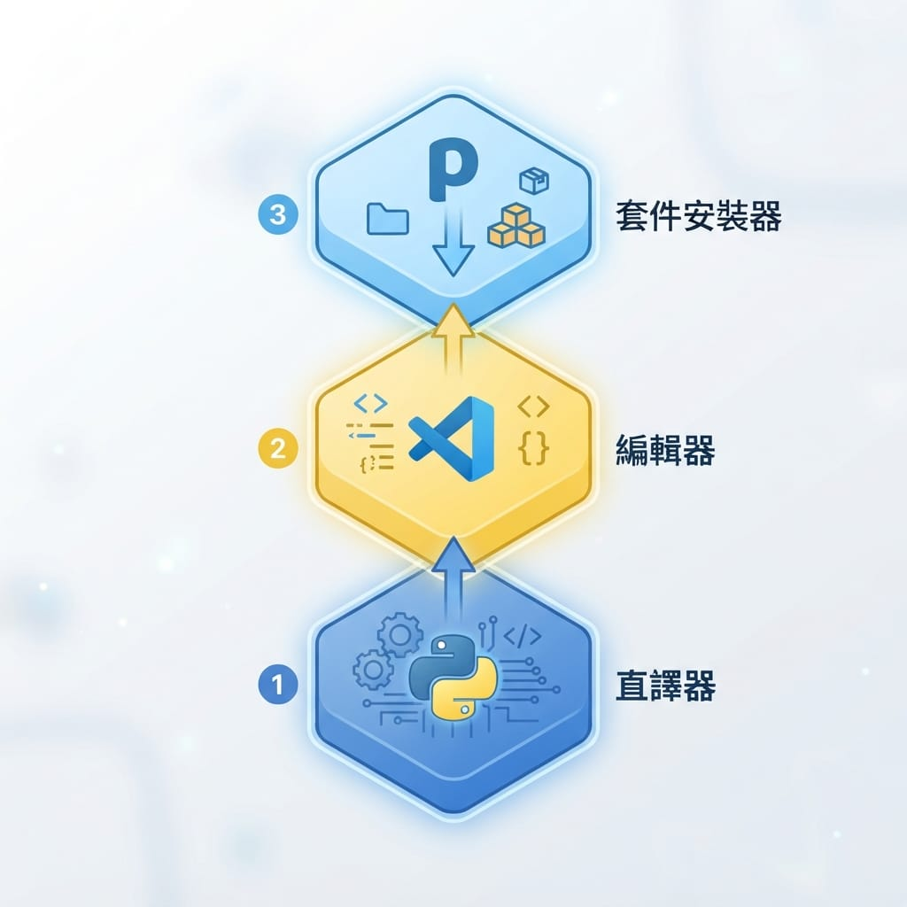

在上一篇總覽裡，我們看過 Python 能做什麼了。從這篇開始正式動手。
第一關不是寫程式，而是把開發環境準備好。Python 的環境門檻很低——任何一台 Windows、Mac 或 Linux 電腦都能開始，而且全部免費。照著做，十幾分鐘就能跑出你的第一支程式。
這篇會帶你完成四件事：安裝 Python、認識 pip、設定 VS Code、跑出第一支程式。
一、安裝 Python
先裝核心——Python 直譯器，它是讓 Python 程式能跑的引擎。
- 到 Python 官方網站（搜尋「python download」就能找到
python.org）。 - 下載最新的穩定版（網站通常會自動偵測你的系統、給出對應的下載按鈕）。截至查證時（2026-10-13），直接抓官網首頁推薦的版本即可，實際版本請以 Python 官方下載頁為準。
- 執行安裝檔。
Windows 使用者注意——這是新手最常漏、也最常害人卡關的一步：
安裝畫面最下方有一個勾選框 「Add Python to PATH」（把 Python 加入環境變數），一定要勾起來再按安裝。勾了它，你才能在終端機直接打 python 指令。很多人沒勾，後面打指令一直說「找不到 python」，就是卡在這裡。
Mac 通常已內建一個舊版 Python，但建議還是從官網裝一份新的；Mac / Linux 安裝相對單純，照官網指示即可。
確認裝好了沒：打開終端機（Windows 的「命令提示字元」或 PowerShell、Mac 的「終端機」），輸入：
python --version印出一組版本號（例如 Python 3.x.x）就代表成功。
如果 Windows 顯示「找不到 python」，九成是剛才沒勾「Add Python to PATH」。解法：重新執行安裝檔、選 Modify、把它勾起來；或重裝一次記得勾。
二、認識 pip：Python 威力的來源
裝 Python 時會順便裝好一個超重要的工具：pip。
pip 是 Python 的套件安裝器。還記得總覽說過，Python 的強大來自「什麼都有現成套件」嗎？那些套件（像之後會用到的 requests、pandas）就是用 pip 一行指令裝進來的：
pip install 套件名稱例如之後學爬蟲時會打 pip install requests，它就會自動幫你把套件下載安裝好。現在不用裝任何東西，先知道 pip 是「幫你裝別人寫好的工具」的指令就夠了。
確認 pip 在：
pip --version小知識：有時指令要用pip3/python3（Mac/Linux 常見，區分新舊版）。如果pip沒反應，試試pip3。
三、安裝與設定 VS Code
有了 Python 引擎，接著裝寫程式的地方。新手我推薦 VS Code——免費、輕量、對 Python 支援很好。
- 到 VS Code 官方網站下載安裝檔（或搜尋「vscode download」），網站會自動偵測你的系統給出對應下載按鈕。
- 執行下載的安裝檔，一路照預設按下去完成安裝。
- 安裝完打開 VS Code，到左側的擴充套件（Extensions）圖示（四個方塊那個），搜尋「Python」，安裝 Microsoft 官方那個 Python 擴充套件。
- 這個擴充套件會提供：語法highlight、自動完成、一鍵執行、除錯等便利功能。
認明：清單裡很多名字含 Python 的套件，你要裝的是名稱就叫「Python」、發行者是 Microsoft（有藍勾勾）的那個。裝它的時候，它會自動把相關的套件（如 Pylance、Python Debugger）一起裝好——所以你會看到一次多裝了幾個，這是正常的，不用一個個手動裝。
簡單說順序是：先下載安裝檔 → 裝好 VS Code 本體 → 打開它 → 再裝 Python 擴充套件。VS Code 本體和擴充套件是兩個東西，別只裝了本體就跳去寫程式。
為什麼不是 PyCharm？PyCharm 也很好（專為 Python 設計、功能完整），但對新手來說 VS Code 更輕量、開得快、學習曲線平緩。先用 VS Code，之後有需要再試 PyCharm。
四、跑出第一支程式
來跑經典的第一支程式。
- 在電腦上建一個資料夾（例如
python-learn），用 VS Code 打開它。 - 新建一個檔案，命名
hello.py（Python 檔案的副檔名是.py）。 - 在裡面寫一行：
print("Hello, World!")- 執行——點右上角的 ▶ 執行按鈕（或在檔案上按右鍵選「在終端機中執行 Python 檔案」）。
- 下方終端機就會印出
Hello, World!。
print(...) 是 Python 最常用的指令，意思是「把括號裡的東西印出來」。恭喜，你跑了人生第一支 Python 程式。🎉
試著改一下：
print("哈囉，我是智慧喵，開始學 Python 了！")再執行一次，看輸出有沒有跟著變。這種「改一點、跑一次、看結果」的循環，就是學程式最有效的方式——而 Python 試錯特別快，寫完直接跑、不用等編譯。
五、認識你的工具：三層關係
把這篇裝的東西，用一張關係圖收尾：

- Python 直譯器：最底層的引擎，負責執行你寫的 Python 程式。
- 編輯器（VS Code）：你寫程式的地方，提供提示、執行、除錯等便利。
- pip：套件安裝器，幫你把別人寫好的強大工具裝進來用。
這篇我們把這三樣準備好了，接下來就能專心學語言本身。
六、虛擬環境 venv：強烈建議一開始就用
你可能會看到一個詞叫 venv（虛擬環境）。簡單說，它是「為每個專案建立一個獨立的 Python 套件空間」。這聽起來像進階主題，但我建議你一開始就用，因為它能避免一個新手超常撞到的坑（下面會講）。
怎麼建、怎麼用：在 VS Code 開啟終端機（檢視 → 終端機），切到你的專案資料夾，依序打：
# 1. 建立虛擬環境（會產生一個 venv 資料夾）
py -m venv venv
# 2. 啟用它（Windows PowerShell）
.\venv\Scripts\Activate.ps1
# Mac / Linux 則是：source venv/bin/activate
# 3. 啟用成功後，提示字元最前面會出現 (venv)，之後裝的套件都進這個環境
pip install 套件名稱啟用後，最後一步讓 VS Code 也用這個環境：按 Ctrl+Shift+P、輸入「Python: Select Interpreter」，選路徑含 venv 的那個。
若啟用時 PowerShell 跳紅字「因為此系統上已停用指令碼執行」，先打這行放行（問 Y/N 按 Y，只影響你自己帳號）：Set-ExecutionPolicy -Scope CurrentUser RemoteSigned，再重試啟用。
為什麼強烈建議用它——避開「ModuleNotFoundError」這個坑：
如果你電腦裝了不只一個 Python（很常見，尤其有裝過其他含 Python 的軟體），pip install 可能把套件裝到 A 這個 Python，但 VS Code 執行程式時用的是 B，結果程式說「找不到套件」（ModuleNotFoundError）——明明裝了卻找不到。用 venv 把環境綁定在專案裡，就不會錯位。
已經撞到ModuleNotFoundError了？兩個解法：①（推薦）照上面建一個 venv、在裡面重裝套件、VS Code 選用該環境。②臨時解：改用python -m pip install 套件名（用「現在這個 python」的 pip 裝，保證不錯位）。
小提醒：之後每次重開終端機，要先跑一次啟用指令（看到 (venv) 才對）；VS Code 選好直譯器後，開新終端機通常會自動幫你啟用。
這一步大約要花多久？
準備環境很快，時間主要花在下載：
- 安裝 Python：十分鐘內（記得勾 Add to PATH）。
- 安裝 VS Code + Python 擴充套件：十幾分鐘。
- 建檔、跑出 Hello World：幾分鐘。
這階段的目標很單純：能建一個 .py 檔、按執行、在終端機看到自己印出的文字。做到這步，你的 Python 開發環境就正式上線了。
下一篇
環境備妥後，下一篇進入 Python 語法基礎——變數與型別、運算子、流程控制，還有 Python 最特別的「用縮排表示程式區塊」規則。這是真正開始寫程式邏輯的地方。
學程式別跳過基礎，一步一步來最快。我們下篇見。🐾
※ 本連結為 Hahow 好學校聯盟連結，連結導向 Hahow 平台（非特定課程頁）；透過它購課我會獲得少許回饋，不影響你的售價。
系列導覽
- 📚 回到 Python 程式設計完整教學 全系列目錄
- ⬅️ 上一篇：Python 是什麼、能做什麼？從零開始的學習地圖（總覽）
- ➡️ 下一篇：語法基礎：變數、型別、流程控制與縮排規則